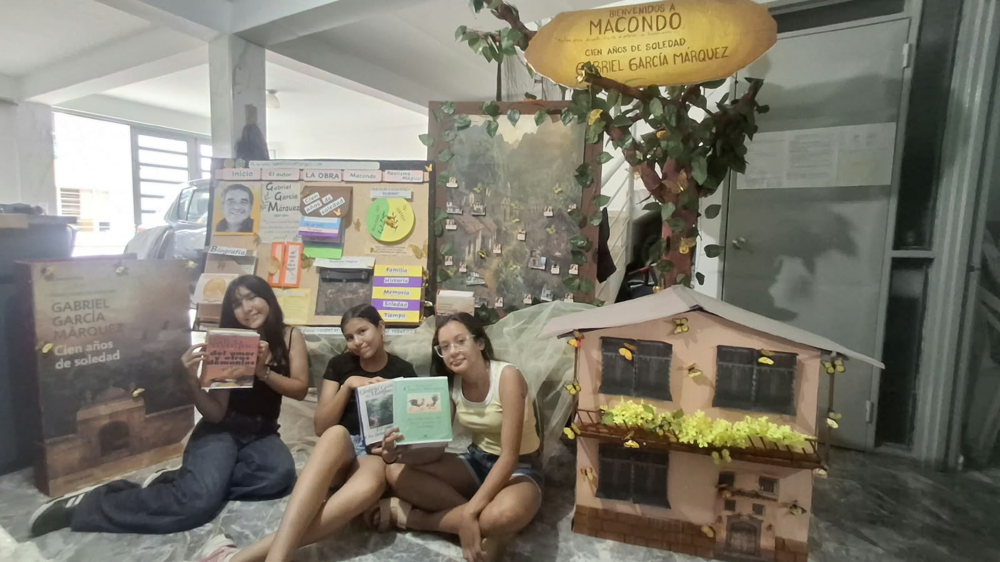

Cien años
El largo periodo de la historia de la familia y de Macondo, desde su fundación hasta su desaparición.
Exposición de grado séptimo
Escritor y periodista colombiano
Aracataca, 1927 — Ciudad de México, 2014
“La vida no es la que uno vivió, sino la que uno recuerda y cómo la recuerda para contarla.”
Las mariposas amarillas acompañan el recorrido
01
De Aracataca al Premio Nobel.
Gabriel García Márquez, conocido como Gabo, nació el 6 de marzo de 1927 en Aracataca, Magdalena, Colombia. Fue un destacado escritor y periodista colombiano, reconocido como uno de los autores más importantes de la literatura latinoamericana.
Desde niño estuvo rodeado de historias familiares y tradiciones de la región Caribe, que inspiraron gran parte de sus obras. Entre sus libros más famosos se encuentran Cien años de soledad, Crónica de una muerte anunciada, El amor en los tiempos del cólera y El coronel no tiene quien le escriba.
En 1982 recibió el Premio Nobel de Literatura por su extraordinaria contribución a las letras. Su estilo se caracterizó por mezclar la realidad con elementos fantásticos, una característica conocida como realismo mágico.
Falleció el 17 de abril de 2014 en Ciudad de México, dejando un legado literario admirado en todo el mundo.
Nace en Aracataca, Magdalena, Colombia.
Crece entre historias familiares y tradiciones del Caribe.
Recibe el Premio Nobel de Literatura.
Muere en Ciudad de México. Su obra sigue leyéndose en el mundo.
02
Cien años de soledad y otros libros para contar en la exposición.
1967 · Novela central
Publicada en 1967, cuenta la historia de varias generaciones de la familia Buendía en el pueblo imaginario de Macondo.
En la novela aparecen acontecimientos familiares, guerras, amores, conflictos, descubrimientos, tragedias y situaciones extraordinarias.
Macondo se convierte en un lugar donde se entrelazan la historia, la memoria, las tradiciones y la imaginación.
La novela también está relacionada con experiencias y recuerdos de la infancia de García Márquez. Investigaciones del Banco de la República señalan la relación entre Macondo y Aracataca, el lugar donde nació el escritor.
El título “Cien años de soledad” es una representación del tiempo y de las generaciones de la familia y los pobladores, los cuales experimentan la soledad y la desconexión, tanto el pueblo como los personajes.
El largo periodo de la historia de la familia y de Macondo, desde su fundación hasta su desaparición.
Aunque están rodeados de personas, muchos personajes se sienten aislados, tienen dificultades para comunicarse y repiten los mismos errores.
La historia comienza con José Arcadio Buendía y Úrsula Iguarán, quienes fundan Macondo. A lo largo de varias generaciones, el pueblo crece y vive acontecimientos como guerras, cambios políticos, la llegada de nuevas tecnologías, el ferrocarril, la compañía bananera y conflictos sociales. La familia Buendía también enfrenta amores, pérdidas, conflictos y situaciones extraordinarias que mezclan la realidad con la fantasía.
La novela nos muestra cómo las decisiones de una generación tienen un impacto en las generaciones futuras, creando un ciclo. A través de la historia, la familia Buendía nos muestra que se pueden repetir los mismos errores si no se aprende de ellos.
Una generación elige y actúa.
Esas decisiones marcan a quienes vienen después.
Con el tiempo, la historia familiar se repite.
Si no se aprende, los mismos errores vuelven.
Estos nombres recorren la fundación de Macondo, las guerras y la memoria de la familia.
Funda Macondo junto con Úrsula Iguarán.
Funda Macondo junto con José Arcadio Buendía.
Sus guerras muestran la violencia, los conflictos y lo que les ocurre a las familias.
Sus pergaminos hablan del tiempo, la memoria y el destino.
Gabriel García Márquez escribió novelas, cuentos, reportajes y otros textos. Entre sus obras más conocidas están:
1955
1961
1962
Novela central
1967
1975
1981
1985
1989
1994
2004
03
Un pueblo imaginario donde se cruzan la historia, la memoria y la imaginación.
Macondo, el pueblo que fundan José Arcadio Buendía y Úrsula Iguarán.
En Cien años de soledad, Macondo es el pueblo imaginario de la familia Buendía. Allí se entrelazan la historia, la memoria, las tradiciones y la imaginación.
La novela también está relacionada con experiencias y recuerdos de la infancia de García Márquez. Investigaciones del Banco de la República señalan la relación entre Macondo y Aracataca, el lugar donde nació el escritor.
Lo que ocurre en Macondo dialoga con la historia del país.
ConexiónViolencia, conflictos y consecuencias para las familias.
ConexiónModernización y transformación de las comunidades.
ConexiónTrabajo, empresas, desigualdad y conflictos laborales.
ConexiónConexión literaria con la Masacre de las Bananeras de 1928.
ConexiónImportancia de conservar la memoria.
ConexiónEl tiempo, la memoria y el destino.
ConexiónLa idea de que los problemas pueden repetirse.
ConexiónAislamiento, dificultades para comunicarnos y relaciones familiares.
Cada idea se puede señalar durante la exposición. La tarjeta activa cambia sola y también se puede elegir con un clic.
“Recordar para comprender, comprender para respetar y respetar para no repetir.”
04
Contar lo imposible con la voz de todos los días.
El realismo mágico es una forma de narrar en la que aparecen acontecimientos extraordinarios o fantásticos dentro de un mundo que también tiene características reales.
Porque en la novela se mezclan constantemente:
La realidad y la fantasía
Lo cotidiano y lo imposible
La historia y la imaginación
La memoria y lo extraordinario
Por eso, el lector puede pasar de una situación completamente cotidiana a otra imposible sin que la narración cambie completamente su tono.
En 1982 recibió el Premio Nobel de Literatura por el conjunto de su producción literaria. El comité del Nobel reconoció especialmente su manera de combinar:
El conjunto de su obra
La Academia Sueca destacó sus novelas y cuentos porque combinaban lo fantástico y lo real dentro de un mundo imaginativo que reflejaba la vida y los conflictos de América Latina.
Fuente señalada en los apuntes: Premio Nobel.
La novela fue muy importante porque:
Llevó la literatura latinoamericana a lectores de muchos países.
Presentó una historia latinoamericana con elementos culturales propios.
Creó un mundo literario memorable alrededor de Macondo.
Combinó acontecimientos históricos y sociales con situaciones fantásticas.
Mostró temas universales como el amor, la soledad, la familia, la memoria y el paso del tiempo.
Se convirtió en una de las obras más reconocidas de García Márquez y ayudó a consolidar su prestigio internacional.
Fuente señalada en los apuntes: Premio Nobel.
05
Grado séptimo
Docente
Sharom Tatiana Novoa

Para cerrar
“La vida no es la que uno vivió, sino la que uno recuerda y cómo la recuerda para contarla.”
“Recordar para comprender, comprender para respetar y respetar para no repetir.”